User manual用户手册
This app plays calm, gentle audiobooks for autistic children.这个应用为自闭症儿童播放平静、温和的有声书。
A parent or caregiver sets everything up. The child listens in a safe Child Mode.由家长或照顾者设置一切，孩子在安全的儿童模式中收听。
Teenagers can also use the app on their own with an independent account.青少年也可以用独立账户自己使用这个应用。
Adds children, books and settings, and checks progress.添加孩子、书本和设置，并查看进度。
Picks a mood and listens to stories in Child Mode.在儿童模式中选择心情并听故事。
A teenager who uses everything in one account.在一个账户里使用所有功能的青少年。
Open the app and meet Paige, your story buddy.打开应用，认识你的故事伙伴 Paige。
Pick a language and who is using the app.选择语言和使用者。
Create an account with a 4-digit PIN.用4位数PIN码创建账户。
Add your child in Profiles.在 Profiles（资料）页面添加孩子。
Set the voice, reading speed and text size in Settings.在 Settings（设置）页面调整声音、语速和字体大小。
Add books in Content: write your own or make one with AI.在 Content（内容）页面添加书本：自己写或用AI生成。
Tap Enter on your child's profile and type your PIN to start Child Mode.在孩子的资料上点击 Enter（进入），输入PIN码开始儿童模式。
Your child picks a mood and listens to a story.孩子选择心情并听故事。
Exit Child Mode with your PIN.用PIN码退出儿童模式。
Check Insights for progress, smart tips and book picks.在 Insights（报告）页面查看进度、智能建议和推荐书本。
Optional: share books and chat with other families in Community.可选：在 Community（社区）与其他家庭分享书本和聊天。
These pages show the first time you open the app.以下是第一次打开应用时看到的页面。
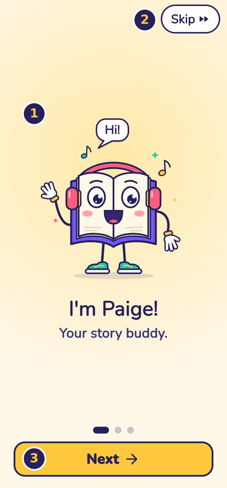
Paige, the app's mascot, says hello.应用的吉祥物 Paige 向你问好。
Skip: go straight to sign-up.Skip（跳过）：直接进入注册。
Next: go to the next page.Next（下一步）：进入下一页。
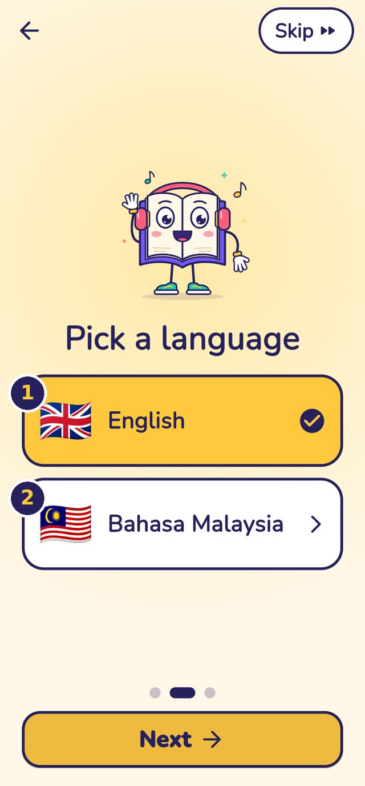
English.英文。
Bahasa Malaysia. You can change the language later in Settings.马来文。之后可以在设置中更改语言。
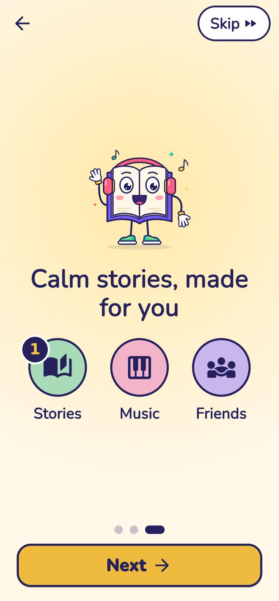
Stories, Music and Friends are the three main parts of the app.故事、音乐和朋友是应用的三个主要部分。
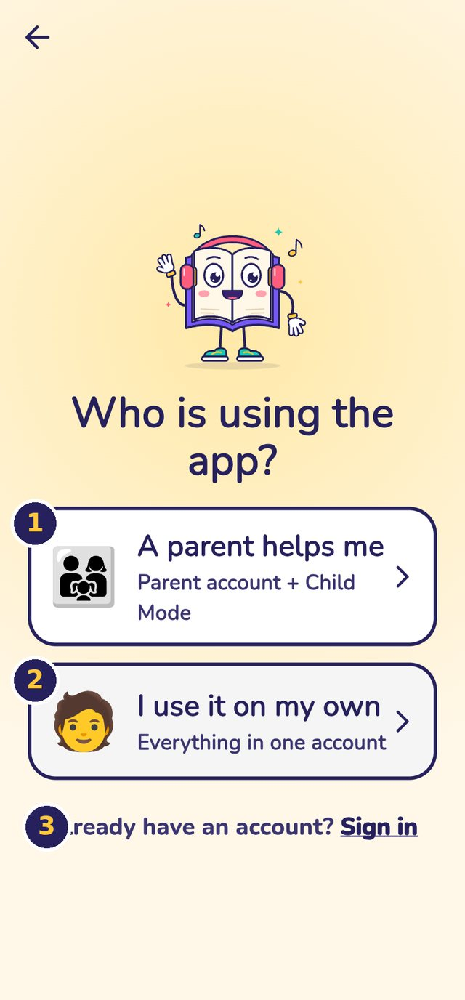
A parent helps me: a parent account with Child Mode. Choose this for young children.A parent helps me（家长协助）：带儿童模式的家长账户，适合年幼的孩子。
I use it on my own: one account with everything, for teenagers.I use it on my own（我自己使用）：一个账户包含所有功能，适合青少年。
Sign in: if you already have an account.Sign in（登录）：如果你已经有账户。
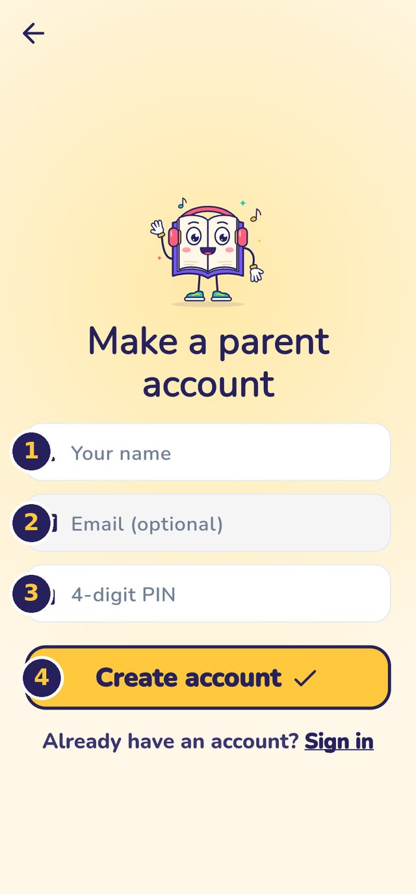
Your name.你的名字。
Email (optional).电子邮件（可选）。
A 4-digit PIN. Remember it: you also need it to leave Child Mode.4位数PIN码。请记住它：退出儿童模式时也需要用到。
Create account.创建账户。
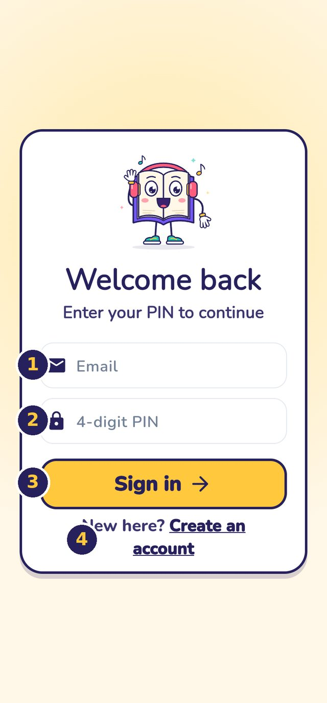
Your email.你的电子邮件。
Your 4-digit PIN.你的4位数PIN码。
Sign in.登录。
New here? Create an account.新用户？创建账户。
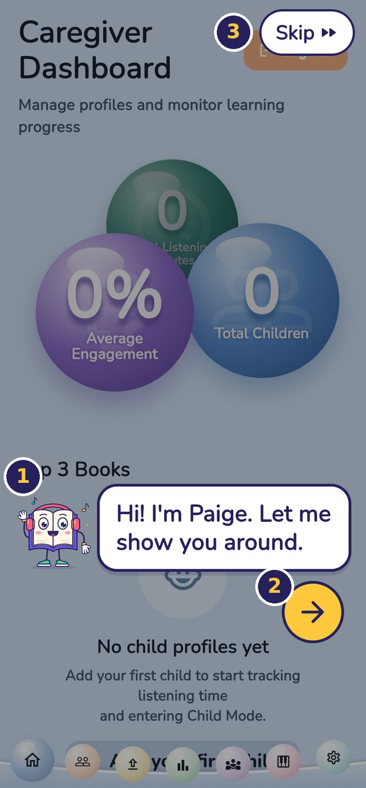
The first time you sign in, Paige shows you each part of the app.第一次登录时，Paige 会带你认识应用的每个部分。
Tap the arrow for the next tip.点击箭头查看下一个提示。
Skip ends the tour. You can watch it again later from Paige.Skip（跳过）结束导览，之后可以从 Paige 重新观看。
The bar at the bottom has 7 tabs: Dashboard, Profiles, Content, Insights, Community, Piano and Settings.底部有7个标签：Dashboard（仪表板）、Profiles（资料）、Content（内容）、Insights（报告）、Community（社区）、Piano（钢琴）和 Settings（设置）。
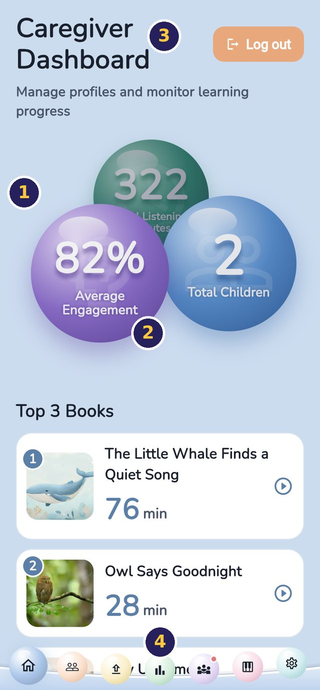
Total listening minutes, average engagement and number of children.总收听分钟、平均参与度和孩子人数。
Top 3 Books: the most-listened books. Tap the play icon to preview one.Top 3 Books（前三名书本）：收听最多的书。点击播放图标可以预览。
Log out.登出。
The tab bar. Tap a tab to change page.标签栏。点击标签切换页面。
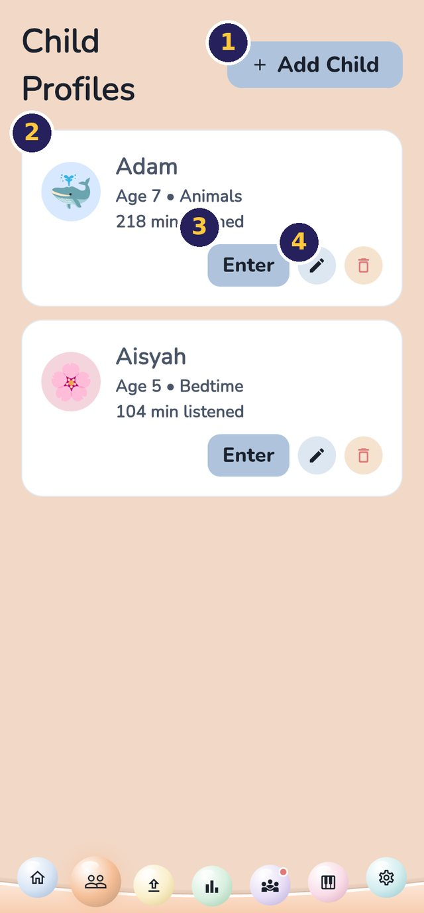
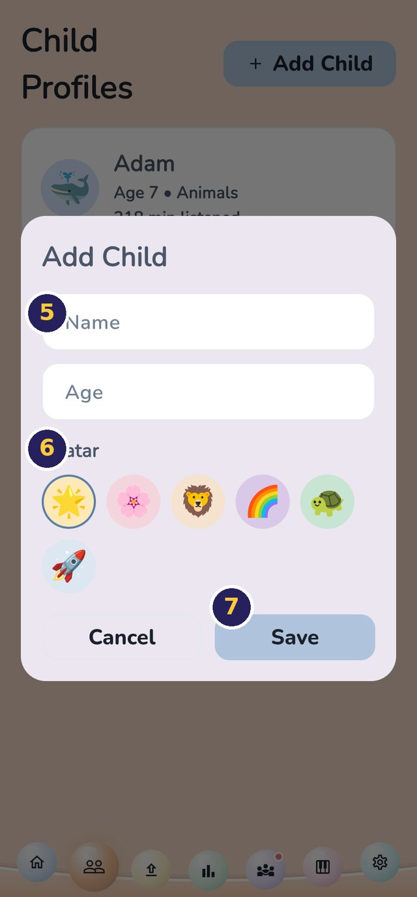
Add Child.Add Child（添加孩子）。
Each child's card shows name, age, favourite topic and minutes listened.每个孩子的卡片显示名字、年龄、喜欢的主题和收听分钟。
Enter: start Child Mode for this child.Enter（进入）：为这个孩子开始儿童模式。
Edit or remove the profile.编辑或删除资料。
Type the child's name and age.输入孩子的名字和年龄。
Pick an avatar.选择头像。
Save.保存。
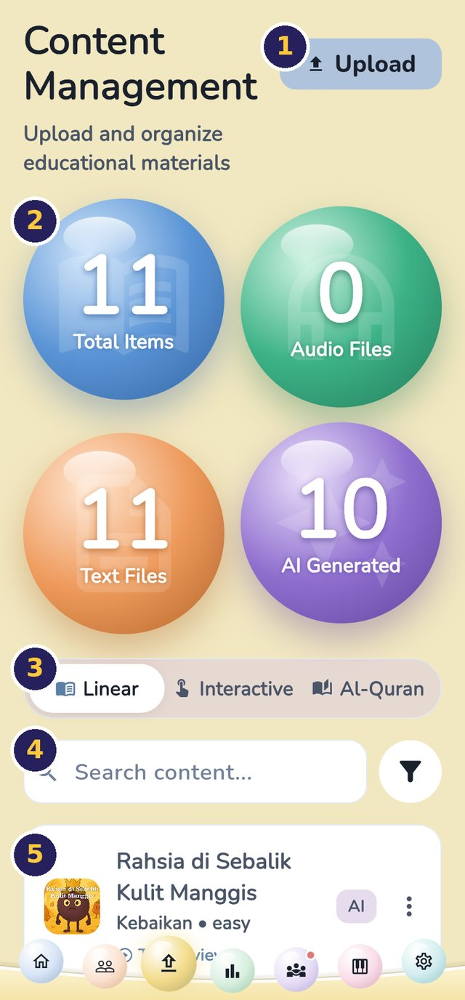
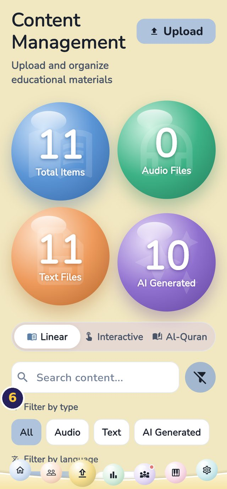
Upload: add a new book.Upload（上传）：添加新书。
How many books you have: total, audio, text and made with AI.你的书本数量：总数、音频、文字和AI生成。
Book types: Linear (a normal story), Interactive (with questions) and Al-Quran.书本类型：Linear（普通故事）、Interactive（有问题的互动书）和 Al-Quran（古兰经）。
Search by title, or tap the filter button.按标题搜索，或点击筛选按钮。
Your books. Tap a book to view it, or tap ⋮ for more options.你的书本。点击查看，或点击 ⋮ 获取更多选项。
Filter by type (audio, text, AI) and by language.按类型（音频、文字、AI）和语言筛选。
New books are private. Only you can see them until you share them.新书是私密的。在你分享之前，只有你能看到。
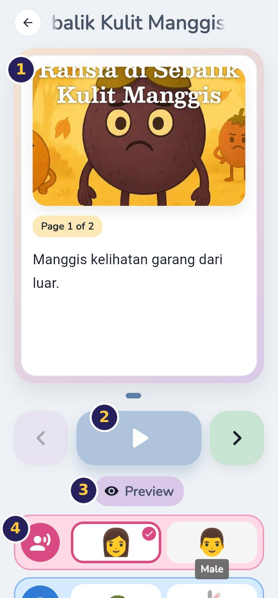
The page picture and text.页面图片和文字。
Back, play and next page.上一页、播放和下一页。
Preview: listen the way your child will.Preview（预览）：以孩子的方式收听。
Pick the narrator voice.选择朗读声音。
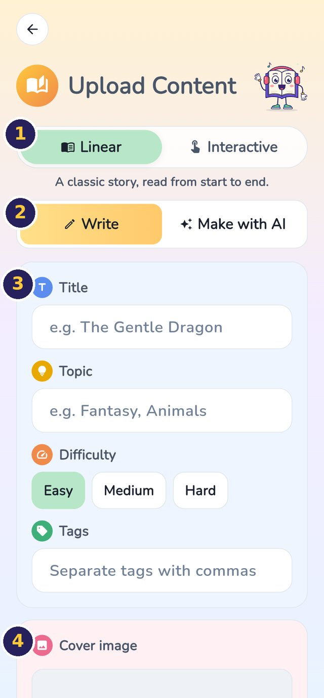
Choose a Linear or Interactive book.选择 Linear（普通）或 Interactive（互动）书本。
Write it yourself, or Make with AI.自己写，或 Make with AI（用AI生成）。
Title, topic, difficulty and tags.标题、主题、难度和标签。
Add a cover picture.添加封面图片。
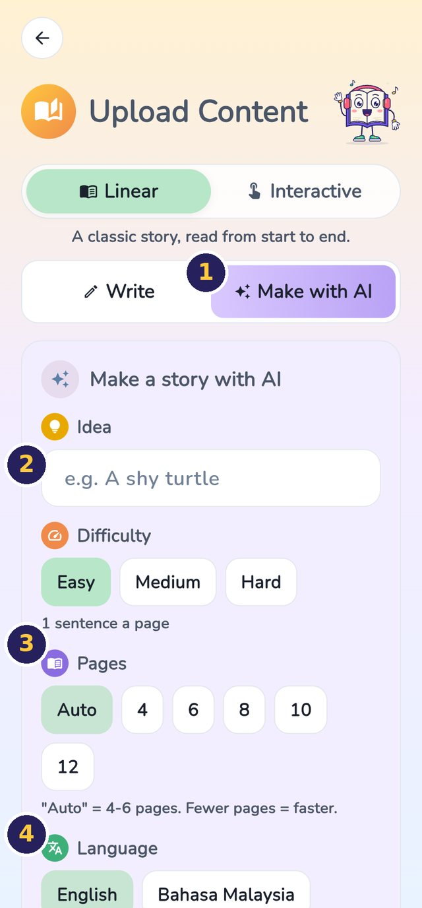
Make with AI is selected.已选择 Make with AI（用AI生成）。
Type an idea, for example "A shy turtle".输入一个想法，例如"一只害羞的乌龟"。
Choose the difficulty and how many pages.选择难度和页数。
Choose the story language. The AI also draws a picture for each page.选择故事语言。AI 也会为每页画一张图。
You can check and edit an AI story before your child sees it.在孩子看到之前，你可以检查和编辑AI生成的故事。
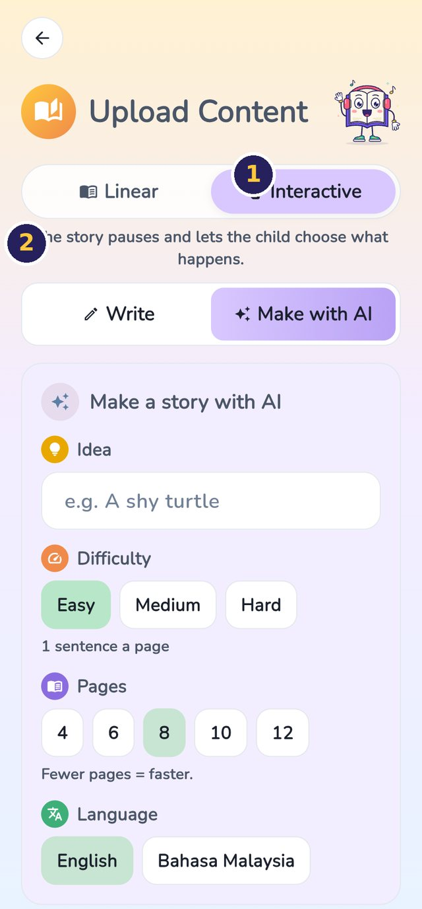
Interactive: the story stops and asks the child a question.Interactive（互动）：故事会停下来问孩子一个问题。
The child taps an answer and the story carries on.孩子点击答案，故事继续。
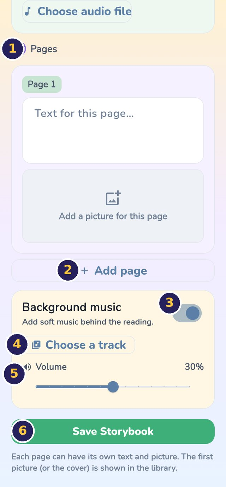
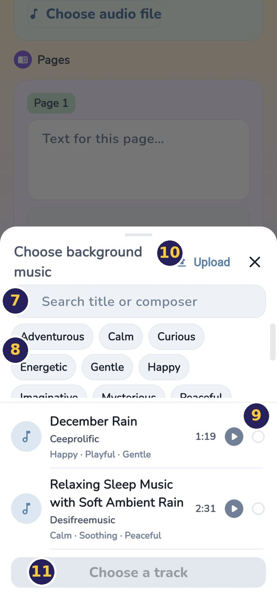
Type the text for each page and add a picture.为每页输入文字并添加图片。
Add page.Add page（添加页面）。
Turn on background music.开启背景音乐。
Choose a track.Choose a track（选择曲目）。
Set the music volume.设置音乐音量。
Save Storybook.Save Storybook（保存故事书）。
Search music by title or composer.按标题或作曲者搜索音乐。
Filter by mood, such as Calm or Gentle.按情绪筛选，例如 Calm（平静）或 Gentle（温和）。
Tap play to listen first, then tick a track.点击播放先试听，再勾选曲目。
Upload your own music.上传你自己的音乐。
Choose a track to confirm.点击 Choose a track 确认。
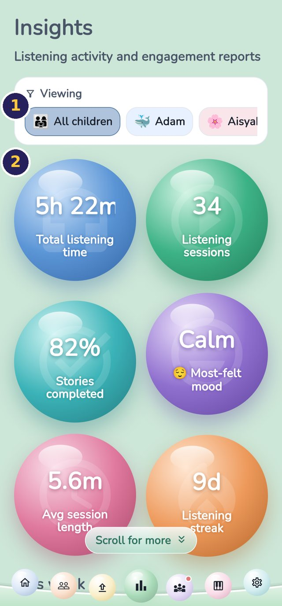
See all children, or pick one child.查看所有孩子，或选择一个孩子。
Listening time, sessions, stories finished, mood, average session and streak.收听时间、次数、完成的故事、心情、平均时长和连续天数。
Scroll down for a weekly chart, moods, top stories and recent activity.向下滚动可以看到每周图表、心情、热门故事和最近活动。
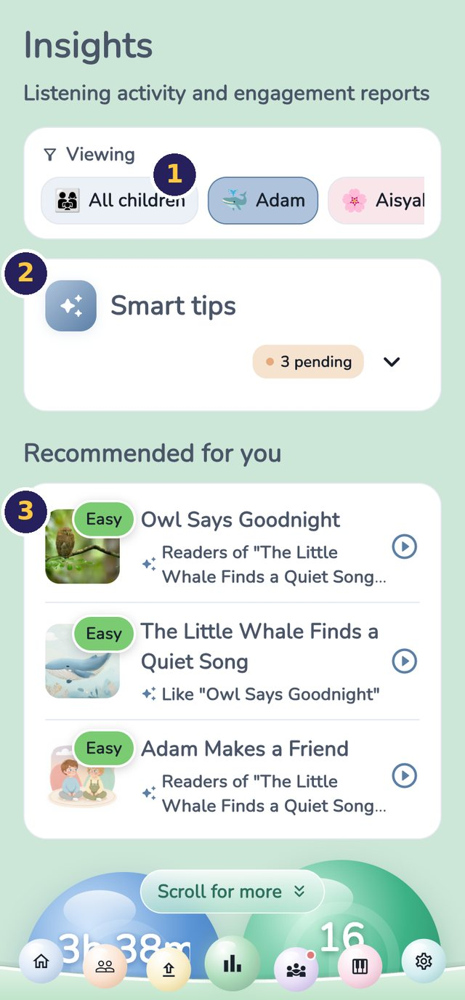
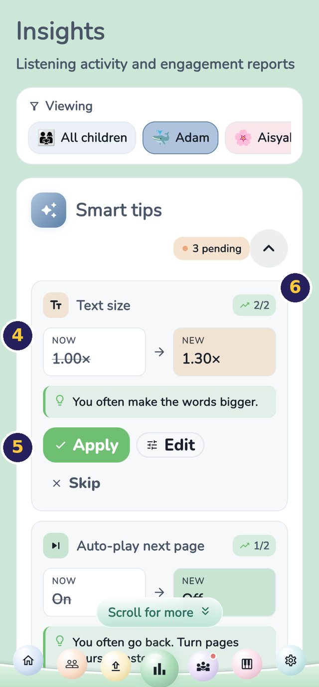
Pick one child to see their tips and picks.选择一个孩子，查看他的建议和推荐。
Smart tips: AI suggestions for better settings. Tap to open.Smart tips（智能建议）：AI 建议更合适的设置。点击展开。
Recommended for you: books picked for this child, each with a short reason.Recommended for you（为你推荐）：为这个孩子挑选的书，每本都附有简短原因。
Each tip shows the setting now and the new value.每条建议显示现在的设置和新的数值。
Apply, Edit or Skip. Nothing changes until you choose.Apply（应用）、Edit（编辑）或 Skip（跳过）。在你选择之前不会有任何改变。
How many times this kind of tip helped before.这类建议以前帮助过几次。
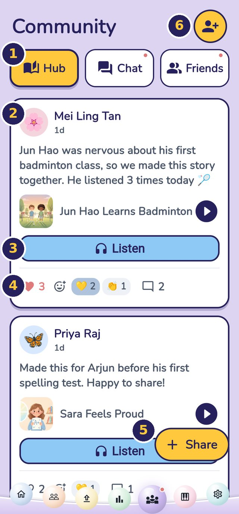
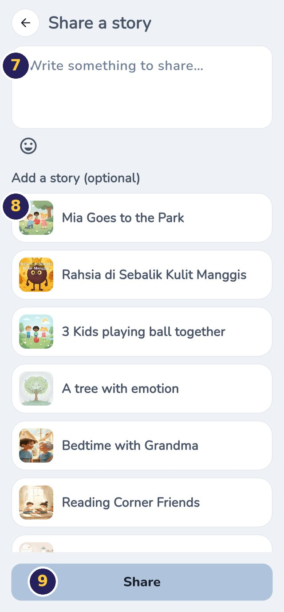
Hub, Chat and Friends.Hub（动态）、Chat（聊天）和 Friends（朋友）。
Posts from families in the community.社区里其他家庭的帖子。
Listen to a shared book.收听分享的书本。
Like, react or comment.点赞、回应或评论。
Share a book or a tip.分享一本书或一个心得。
Invite another family.邀请其他家庭。
Write a message.写一段话。
Add one of your books (optional).添加一本你的书（可选）。
Share.Share（分享）。
Only members can see the hub. Nothing is shared unless you choose to share it.只有成员能看到动态。除非你选择分享，否则不会分享任何内容。
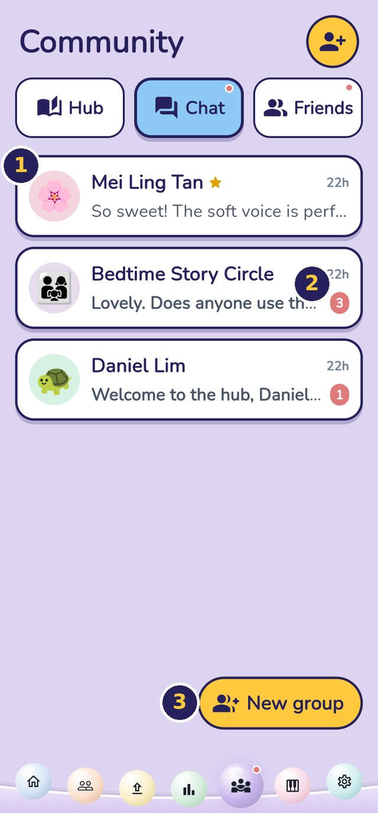
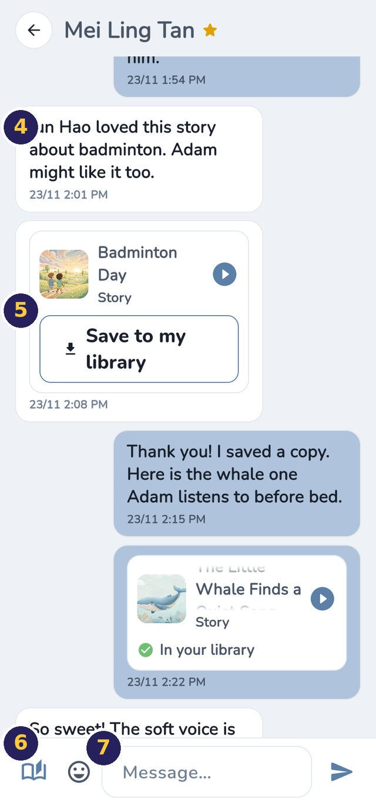
Your chats. Starred friends stay on top.你的聊天。加星标的朋友会置顶。
The red number shows unread messages.红色数字表示未读消息。
New group: chat with several families.New group（新群组）：与多个家庭一起聊天。
Messages.消息。
A book sent in a chat. Tap "Save to my library" to keep your own copy.聊天中发送的书。点击 Save to my library 保存你自己的副本。
Send one of your books.发送你的书。
Type a message.输入消息。
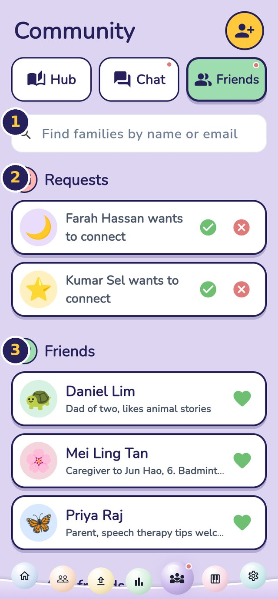
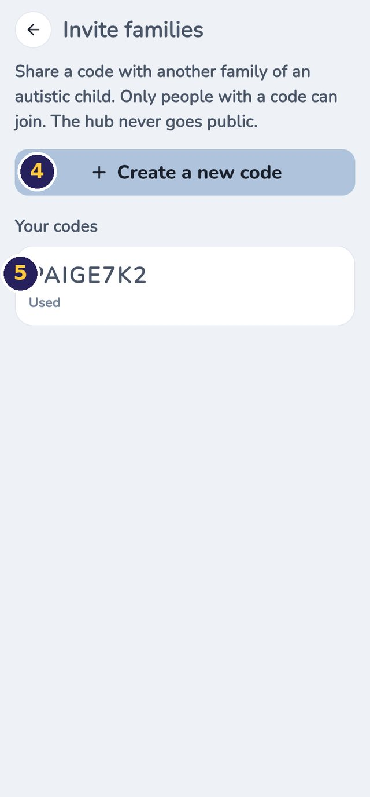
Find families by name or email.按名字或电子邮件寻找家庭。
Friend requests: tap the tick to accept or the cross to decline.好友请求：点击勾号接受，点击叉号拒绝。
Your friends.你的朋友。
Create a new invite code.Create a new code（创建新的邀请码）。
Your codes. Give a code to another family so they can join.你的邀请码。把邀请码给其他家庭，他们就能加入。
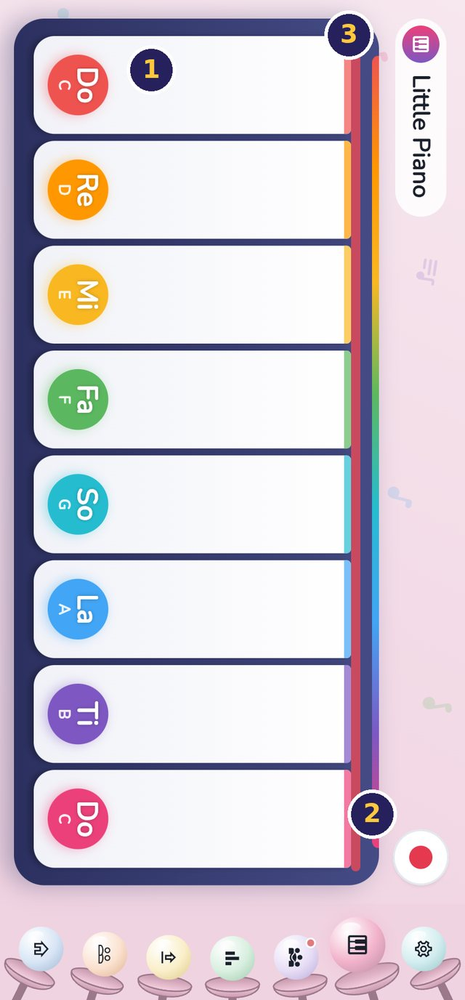
Tap the coloured keys (Do, Re, Mi...) to play notes.点击彩色琴键（Do、Re、Mi……）弹奏音符。
Record a melody.录制旋律。
Your recordings. A recording can be used as background music.你的录音。录音可以用作背景音乐。
The piano turns sideways so the keys fit the screen.钢琴会横向显示，让琴键适合屏幕。
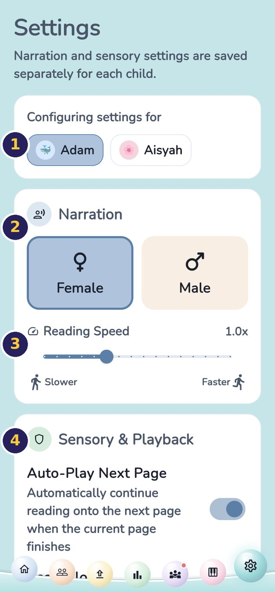
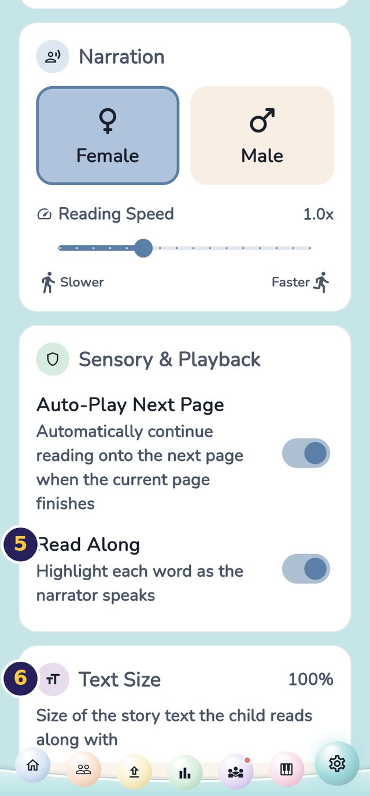
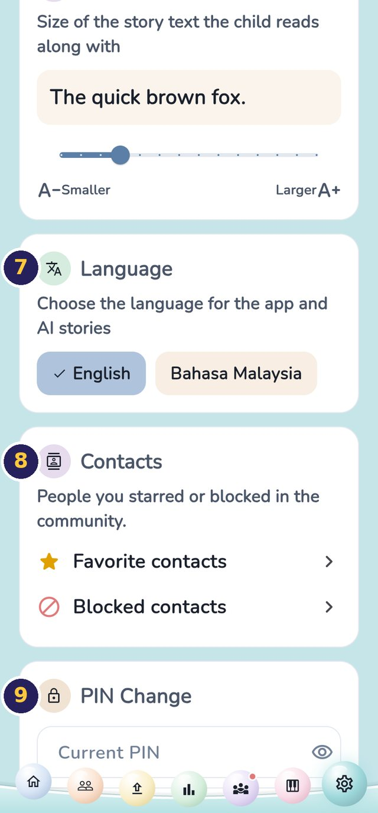
Choose which child to set up. Each child has their own settings.选择要设置的孩子。每个孩子都有自己的设置。
Narrator voice: female or male.朗读声音：女声或男声。
Reading speed.朗读速度。
Auto-Play Next Page: turn pages by themselves.Auto-Play Next Page（自动翻页）：自动翻到下一页。
Read Along: light up each word as it is read.Read Along（跟读）：朗读时每个字会亮起。
Text size.字体大小。
Language for the app and AI stories.应用和AI故事的语言。
Contacts: people you starred or blocked.联系人：你加星标或屏蔽的人。
Change your PIN.更改PIN码。
Child Mode is a simple, calm space for your child. Your PIN is needed to start it and to leave it.儿童模式是给孩子的简单、平静的空间。开始和离开都需要你的PIN码。
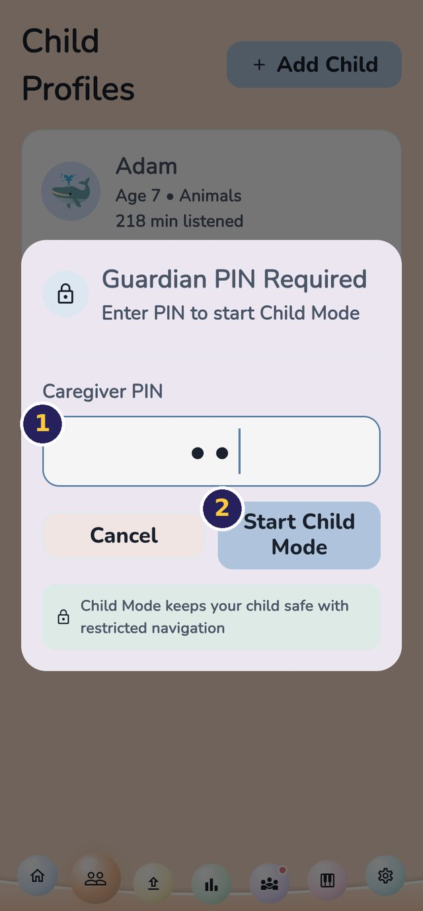
Type your 4-digit PIN.输入你的4位数PIN码。
Start Child Mode.Start Child Mode（开始儿童模式）。
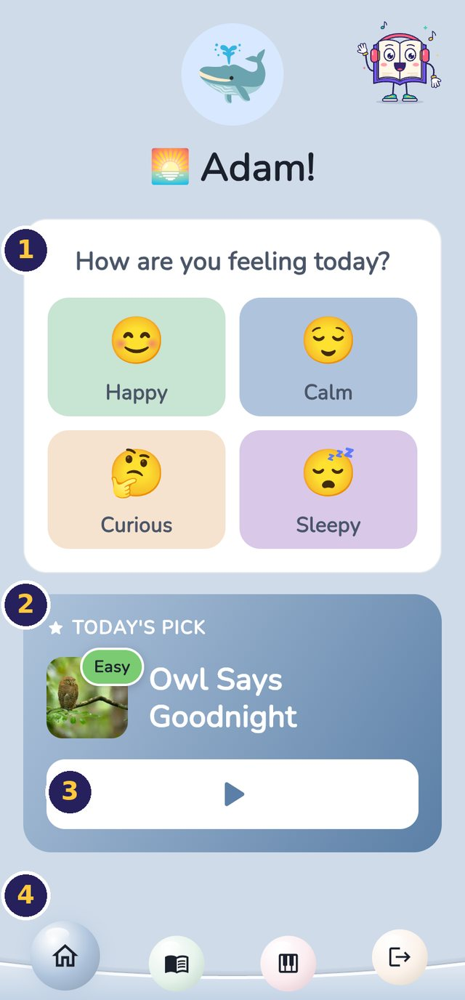
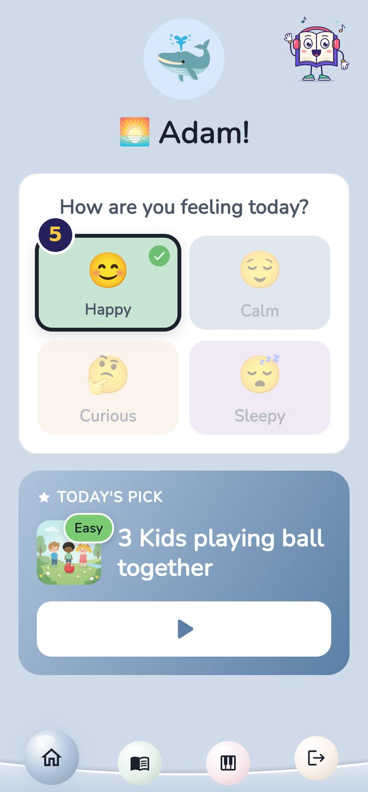
How are you feeling today? The child taps a mood.你今天感觉怎么样？孩子点选一个心情。
Today's pick: a book chosen for the child.Today's pick（今日推荐）：为孩子挑选的书。
Tap play to start.点击播放开始。
Home, Stories, Piano and Exit.主页、故事、钢琴和退出。
After the child picks a mood, Today's pick changes to suit it.孩子选择心情后，今日推荐会随之改变。
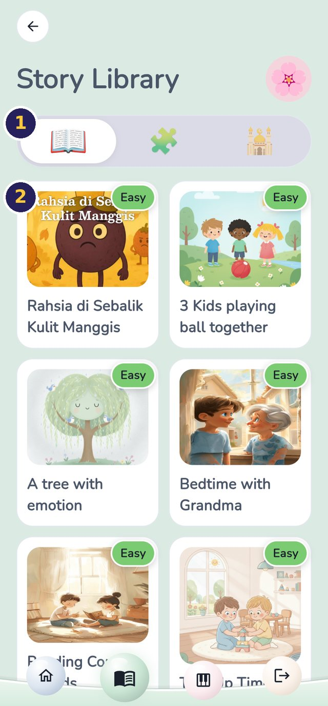
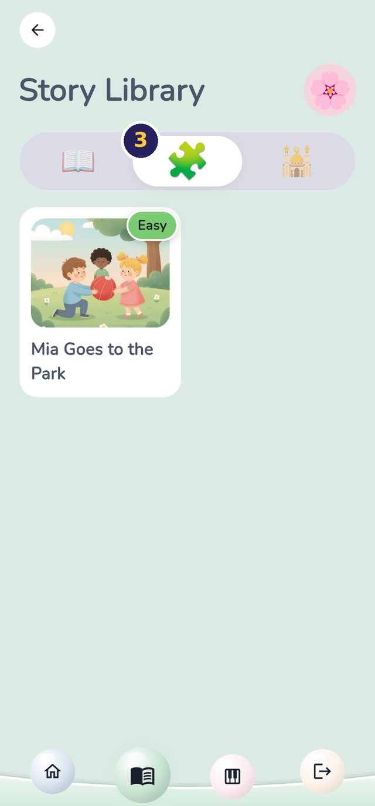
Three tabs: stories, interactive books and Al-Quran.三个标签：故事、互动书和古兰经。
Tap a book to open it.点击书本打开。
Interactive books are under the puzzle tab.互动书在拼图标签里。
Al-Quran chapters are downloaded to the phone and play without internet.古兰经章节下载到手机后，无需网络即可播放。
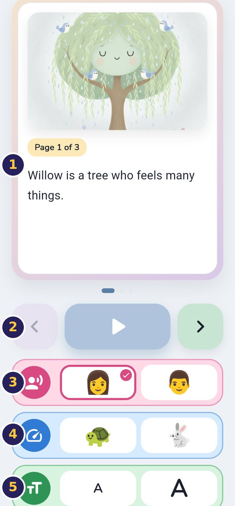
The page picture and words. Words light up as they are read.页面图片和文字。朗读时文字会亮起。
Back, play or pause, and next page.上一页、播放或暂停、下一页。
Voice: female or male.声音：女声或男声。
Speed: slow (turtle) or fast (rabbit).速度：慢（乌龟）或快（兔子）。
Text size: small or big.字体：小或大。
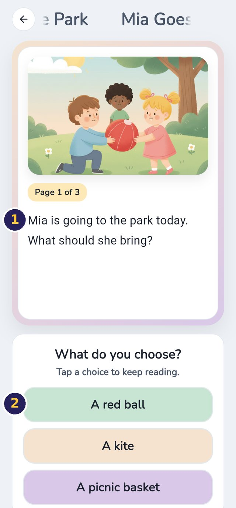
The story asks a question.故事提出一个问题。
Tap an answer to keep reading.点击答案继续阅读。
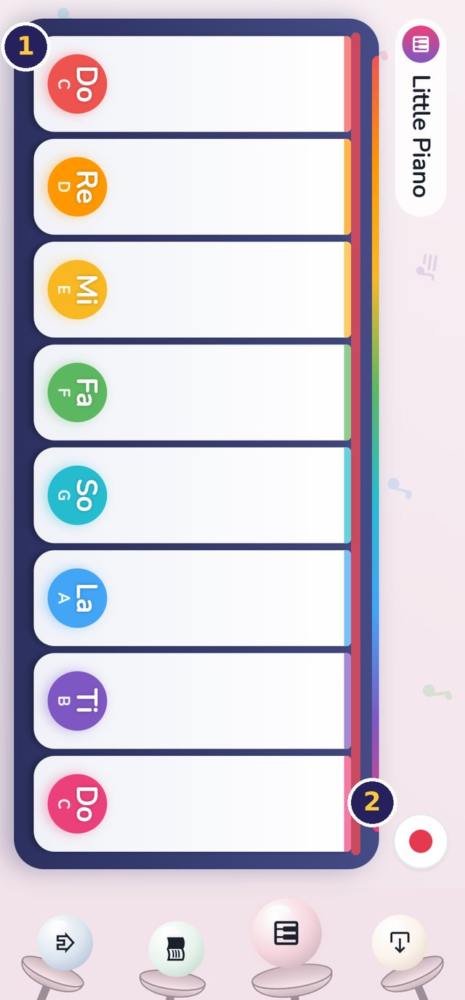
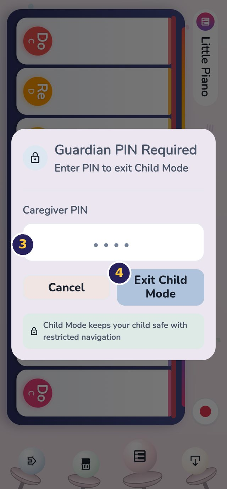
Play the coloured keys.弹奏彩色琴键。
Record a song.录制歌曲。
To leave, the caregiver types the PIN.要离开时，照顾者输入PIN码。
Exit Child Mode.Exit Child Mode（退出儿童模式）。
Choose "I use it on my own" when you sign up. Everything is in one account, with no Child Mode.注册时选择 I use it on my own（我自己使用）。所有功能都在一个账户里，没有儿童模式。
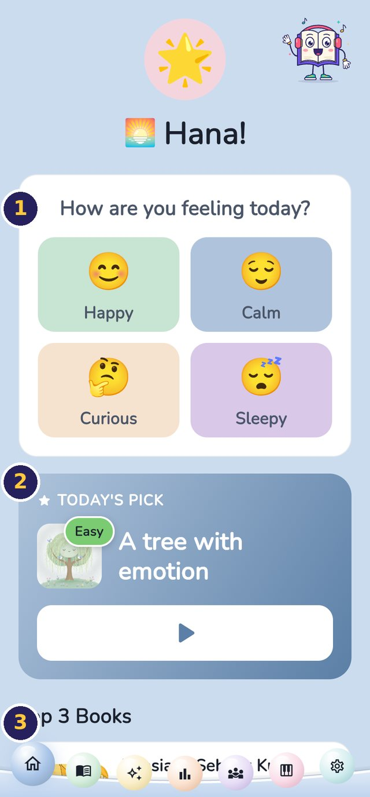
Pick a mood.选择心情。
Today's pick.今日推荐。
Tabs: Home, Stories, Create, Progress, Community, Piano and Settings.标签：主页、故事、创作、进度、社区、钢琴和设置。
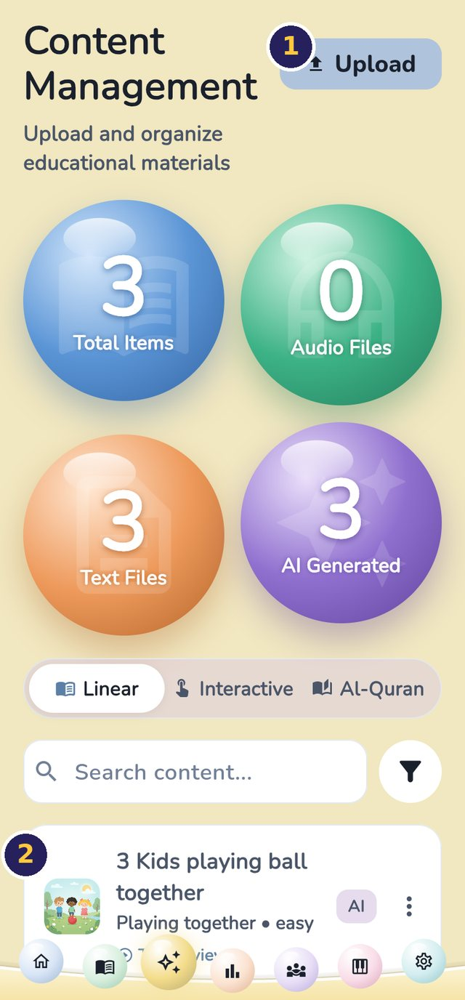
Upload a book, or make one with AI.上传书本，或用AI生成。
Your books.你的书本。
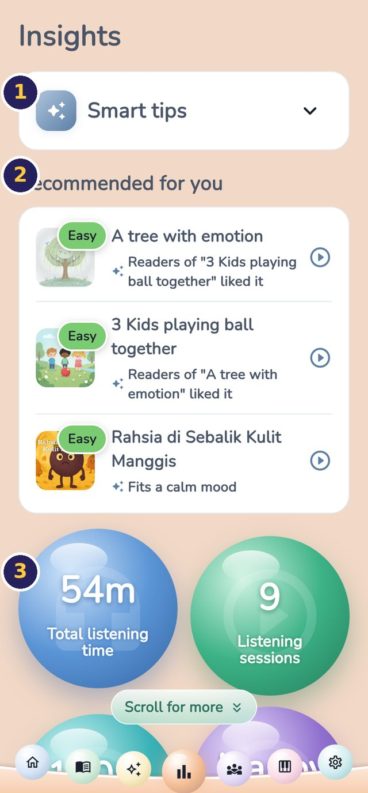
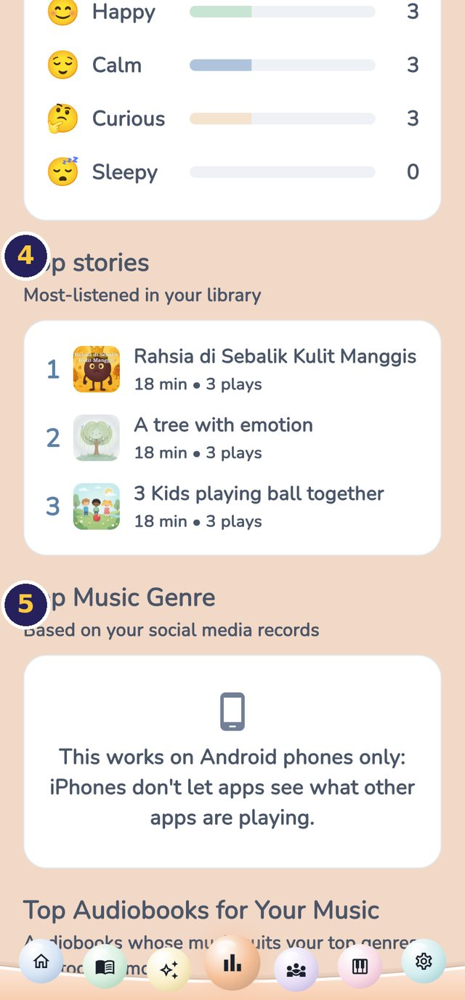
Smart tips.智能建议。
Recommended for you.为你推荐。
Your listening numbers.你的收听数据。
Top stories.热门故事。
Top Music Genre: with your permission, the app learns what music you like on YouTube. This works on Android phones only.Top Music Genre（热门音乐类型）：经你允许后，应用会从 YouTube 了解你喜欢的音乐。仅适用于安卓手机。
Keep your PIN private. Your child needs you to leave Child Mode.请保管好你的PIN码。孩子需要你才能离开儿童模式。
Books you make are private until you share them.你制作的书在分享之前都是私密的。
Smart tips never change a setting by themselves.智能建议不会自行更改任何设置。
The AI gets listening numbers only, never your child's name.AI 只会收到收听数据，绝不会收到孩子的名字。
The screens in this manual use sample accounts and books.本手册中的画面使用示例账户和书本。